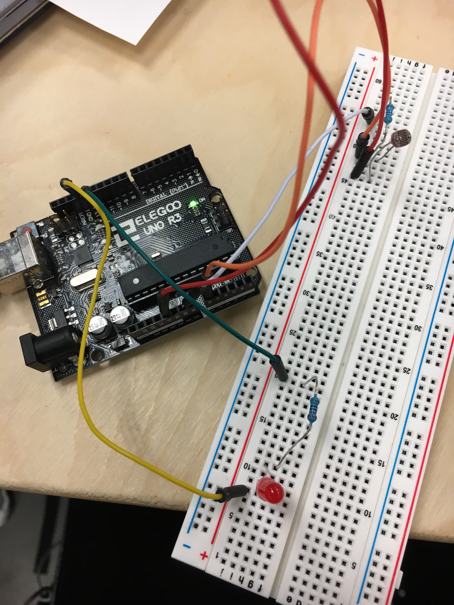
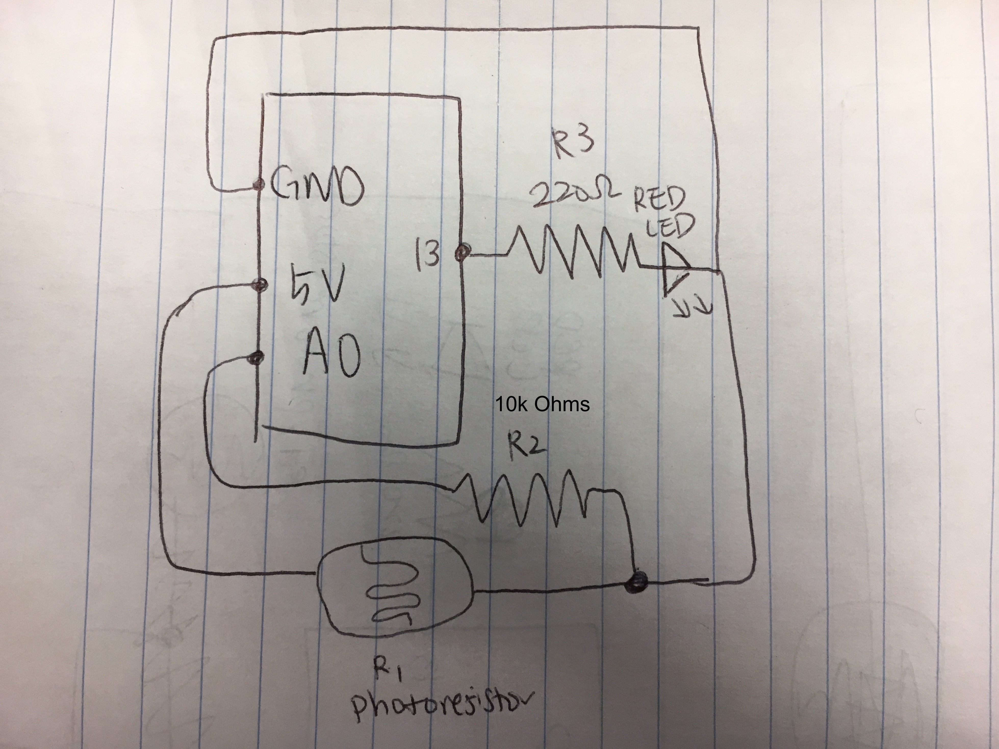
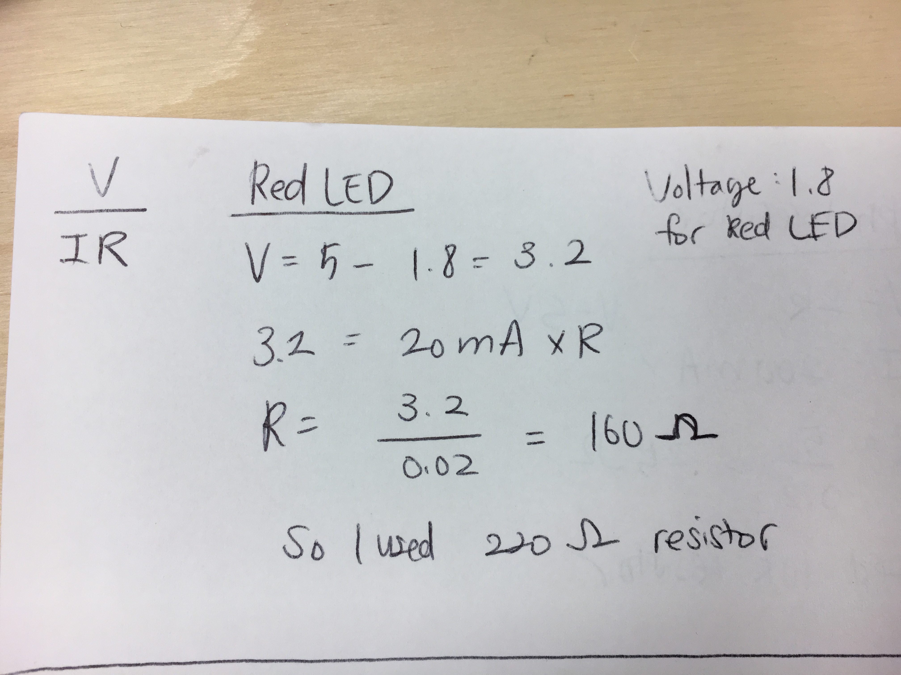
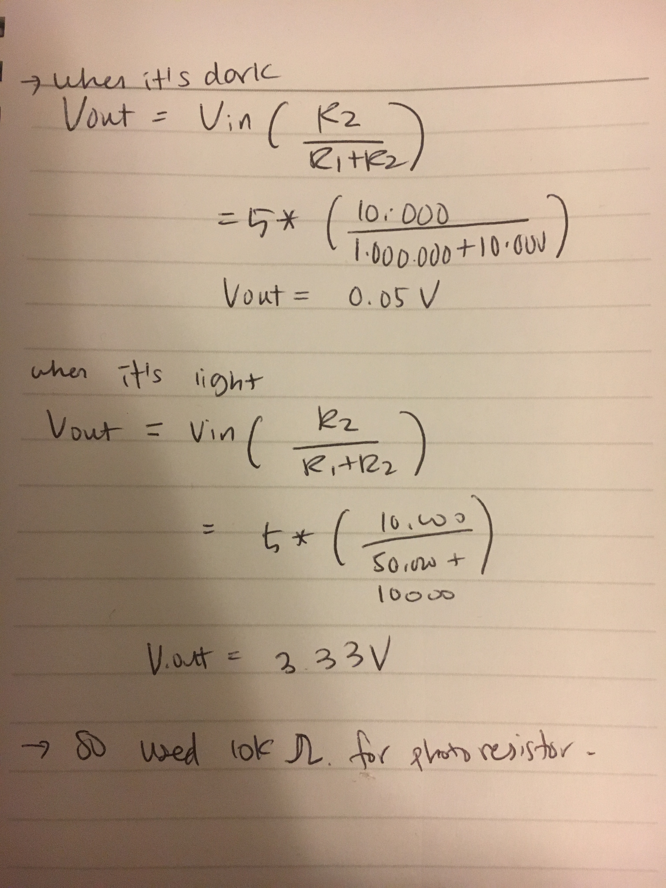

Third Assignment - Input Output!
Circuit
Creating a schematic, circuit, and code that uses a sensor (e.g. either the photoresistor or the thermistor) in a voltage divider to change the state of an LED.

Schematic
Calculation
LED Resistor
I chose 220Ω for the resistors for my LED because I needed to find the optimal resistor to prevent broken LEDs. The reasoning is -- red LED has 1.8 V drop. Current is 20 mA. Voltage from Arduino is 5V. Using Ohm’s law(V = I x R), the circulation to find R is:5V - 1.8V = 3.2 V = 0.02 (20mA) x R. R is 160Ω. And the resistor nearest value to 160Ω was 220Ω.
Photoresistor Resistor

Firmware
//set pin numbers
const int ledPin = 13; //the number of the lED pin
const int ldrPin = A0; //the number of the LDR pin
void setup() {
// initialize serial communications at 9600 bps:
Serial.begin(9600);
//initialize the LED pin as an output
pinMode(ledPin, OUTPUT);
//initialize the LDR pin as an output
pinMode(ldrPin, INPUT);
}
void loop() {
// read the ldrLED in value
int sensorValue = analogRead(ldrPin);
//map it to range of analog out
int outputValue = map(sensorValue, 0, 1023, 0, 255);
// if the output value is greater than or equal to 200, turn the LED on
if (outputValue <= 200) {
// turn on LED
analogWrite(ledPin, 220);
// write to the serial monitor that the LED is on
Serial.println("LED is on");
// When output value is equal to or less than 200, turn the LED off
} else {
// turn off LED
digitalWrite(ledPin, LOW);
// write to the serial monitor that the LED is off
Serial.println("LED is off");
}
}
Circuit's operation

Tada! Once covering the area and minimizing exposed light near photoresister, the red LED turns on!